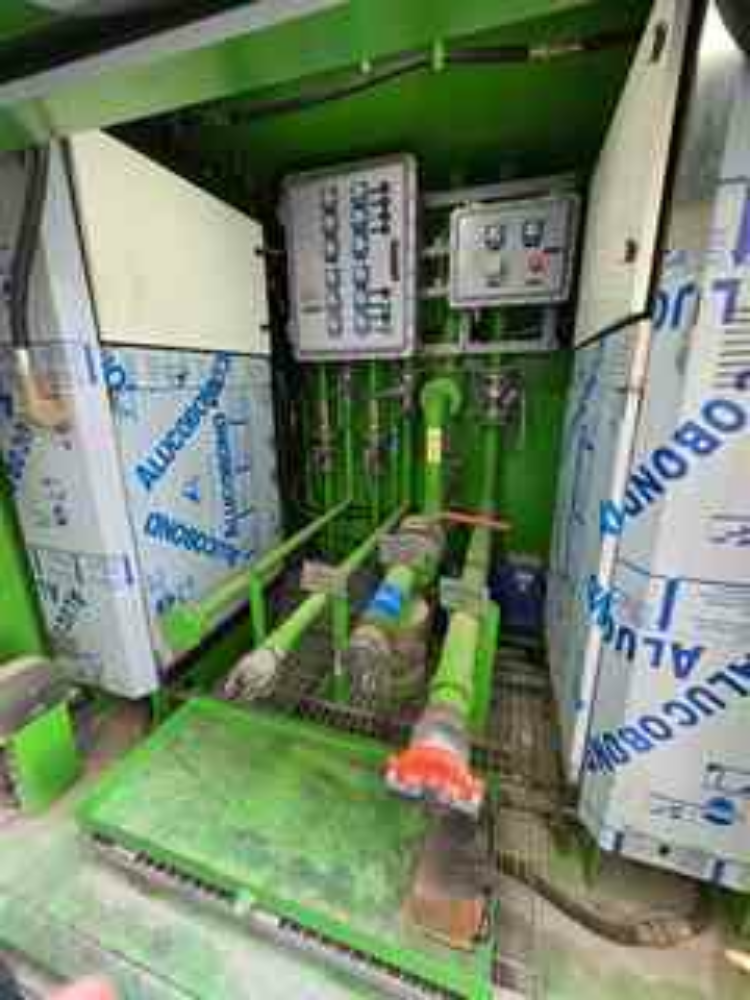
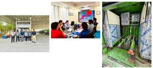

3D Mechanical Design
SolidWorks package assemblies, equipment arrangements, piping integration, supports, base frames and skid layouts.
A curated place for genuine project photographs, 3D models, GA drawings, fabrication evidence and FAT/SAT records. Confidential employer and customer-controlled documents are kept out of the public portfolio.
Selected photographs from the Emarat 40 FT Dual-Compartment Mobile Fueling Unit project. The expanded set documents the manufactured unit, fuel-system integration, customer/site inspection, equipment review and technical coordination.



SolidWorks package assemblies, equipment arrangements, piping integration, supports, base frames and skid layouts.
Non-confidential views of compressor package architecture, lubrication systems, seal systems, piping and equipment integration.
Package arrangement, air treatment train, receivers, PSA generator, nitrogen buffer and instrumentation interfaces.
Mobile fueling units, portable fuel stations, tank arrangements, dispensing equipment, vapor recovery and safety systems.
Tank fabrication/design evidence, nozzle arrangements, supports, dimensions, calibration work and completed assemblies.
Pump, equipment-support, tank, instrument and fuel skids, structural frames and platforms.
Translate customer requirements into a buildable mechanical/package concept and coordinated 3D arrangement.
Develop/review GA and fabrication drawings, piping interfaces, equipment connections and supporting details.
Support MTO/BOM, vendor coordination, production interfaces and manufacturing queries.
Support testing, customer inspection, punch-point closure and final package review.
Use genuine photographs to show the transition from engineering design to a physical package.
SAFE TO PUBLISH: Your own photographs, your own original non-confidential illustrations, generic engineering diagrams, and drawings cleared for public use.
REDACT BEFORE PUBLISHING: customer names, project numbers, internal drawing numbers, confidential dimensions, proprietary equipment data and controlled document identifiers when required.
DO NOT PUBLISH: confidential employer drawings, customer-controlled documents, proprietary calculations or internal documentation unless explicit permission exists.
More approved photographs can be added for compressor packages, PSA nitrogen systems, storage tanks, skids and FAT/SAT activities. Only genuine project evidence will be used; AI-generated images will not be presented as project photographs.
← Back to projects